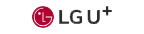

|  |
LG U+ |
2023.01~ |
- -LG U+ 홈페이지 운영,개선 업무
- -2024 웹접근성 마크 취득
- -vue.js, scss 기반
- -Git 통한 형상관리
- -Jira, Confluence 협업툴 이용
- -Zeplin, Figma를 통해 디자인 가이드를 준수하여 퍼블리싱 진행
|
|
세종사이버대학교 |
2020.02~2022.02 |
- -세종사이버대학교 대학, 대학원, 입학지원센터, 학과 홈페이지 운영, 유지보수 및 관리
- -cms 관리
- -이벤트 페이지 마크업
- -홈페이지 구축 관리
- -웹 표준 준수 및 웹 접근성 마크업
|
|
토양오염이력관리시스템 |
2019.10~2020.01 |
- -토양오염이력관리시스템 gis 화면 구축 및 유지보수
- -웹 표준 준수 및 웹 접근성 마크업
|
|
물환경정보시스템 인트라넷 |
2019.09~2020.01 |
- -물환경정보시스템 내부망 관리자 웹사이트 구축 및 유지보수
- -웹 표준 준수 및 웹 접근성 마크업
|
|
4대강보모니터링 관리자 |
2018.06~2020.01 |
- -보모니터링 관리자 웹사이트 구축 및 유지보수
- -웹 표준 준수 및 웹 접근성 마크업
|
|
왜관수질측정안전센터 |
2017.11~2020.01 |
- -왜관수질측정안전세터 모니터링 화면 구축
- -웹 표준 준수 및 웹 접근성 마크업
|
|
환경부 전기차충전소 |
2017.08~2018.12 |
- -환경부 전기차 충전소 웹사이트 구축 및 유지보수
- -웹 표준 준수 및 웹 접근성 마크업
|
|
㈜씨이기술 |
2017.04~2020.01 |
- -반응형 홈페이지 구축 및 유지보수
- -웹 표준 준수 및 웹 접근성 마크업
|
|
KEPCO 전기차충전서비스 운영시스템 |
2017.04~017.04 |
- -KEPCO 전기차충전서비스 운영시스템 유지보수
- -웹 표준 준수 및 웹 접근성 마크업
|
|
대구전기차충전소 |
2017.02~2018.12 |
- -대구 전기차 충전소 웹사이트 구축 및 유지보수
- -웹 표준 준수 및 웹 접근성 마크업
|
|
에어코리아 |
2016.04~2018.12 |
- -에어코리아 구축 및 유지보수
- -웹 표준 준수 및 웹 접근성 마크업
|
|
국가상수도정보시스템 |
2016.03~2018.12 |
- -국가상수도정보시스템 구축 및 유지보수
- -웹 표준 준수 및 웹 접근성 마크업
|
|
물환경정보시스템 |
2016.02~2020.01 |
- -물환경정보시스템 웹사이트 구축 및 유지보수
- -웹 표준 준수 및 웹 접근성 마크업
|
|
실시간수질정보시스템 |
2016.02~2020.01 |
- -실시간수질정보시스템 웹 사이트 메인 구축
- -웹 표준 준수 및 웹 접근성 마크업
|
|
수질원격감시체계 |
2016.01~2020.01 |
- -수질원격감시체계 웹사이트(다국어), 모바일웹 구축 및 유지보수
- -웹 표준 준수 및 웹 접근성 마크업
|
|
토양지하수정보시스템 |
2015.12~2020.01 |
- -토양지하수정보시스템 웹 사이트 메인 리뉴얼 구축
- -웹 표준 준수 및 웹 접근성 마크업
|